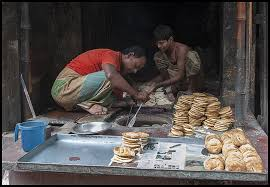

Although most popularly eaten in Old Dhaka, where it is an authentic tradition, the makers of bakarkhani tend to have roots in Sylhet. Many rebellious Afghans migrated to the Sylhet region during the Baro-Bhuiyan period as it was seen as a safe-zone for them due to the strong insurgency of rebellious chieftains. The final Afghan ruler, Khwaja Usman, was defeated by the Mughals in 1612 and the remaining Afghans surrendered though continuing to live in Sylhet. The rebels which were captured by the Mughals were made to serve a type of bread associated with their Afghan culture (which would later be known as bakarkhani). As Dhaka was the capital of Mughal Bengal, people from all over Bengal, including Sylhet, would migrate there seeking employment opportunities. The elites of Dhaka had good relations with the upper-class families of Sylhet, and transport between these two regions were common. Many Sylhetis who came to Dhaka started making this bread which they supposedly learnt from the Afghans which lived in Sylhet.[4][1] Many of Dhaka's bakarkhani sellers even today originate from the Sylhet Division.[5] .
A legend attributes the bread's name to Agha Baker Khan, an adopted son of the Nawab of Bengal, Murshid Quli Khan.[6] According to the legend, Agha Baker Khan, a general based in Chittagong under Nawab Siraj ud-Daulah of Bengal, falls in love with a dancer called Khani Begum from Arambagh, who was also eyed by Zaynul Khan, the city's kotwal and the son of a wazir. Zaynul attempts to attack Khani for rejecting him, and Baker intervenes, defeating Zaynul in a swordfight. Zaynul 's two companions go and lie to his father, the wazir, telling him that Baker has killed Zaynul. Out of fury, the wazir orders them to put Baker inside a cage with a tiger. Baker kills the tiger and at the same time, the claim of Zaynul's death is found to be false. The wazir, Jahandar Khan, and his son Zaynul then kidnap Khani and set off for South Bengal. The battle continues there as Baker arrives to rescue Khani. In another brawl of talwars, Jahandar accidentally kills Zaynul, after Zaynul inadvertently murders Khani. Khani is later buried in Bakla-Chandradwip (Patuakhali-Barisal). Baker Khan builds a tomb over her grave and Bakla-Chandradwip would be renamed Bakerganj after him.[2] Baker was already familiar with this area as he was a jagirdar in Barisal's Salimabad and Umedpur parganas.[7] The tragic love story of Baker Khan and Khani Begum inspired the bakers to name his favourite bread Bakerkhani.[8][9] Dhaka's first bakarkhani shop opened in close proximity to Lalbagh Fort. The Bengal Subah, specifically Mughal Dhaka, was a hub for merchants from all parts of the subcontinent and even as far as the Middle East and Armenia. Through trade and travel, the bakerkhani became popular outside of Bengal in places such as Kashmir, Bihar, Lucknow and Hyderabad.
Bakerkhani is made by kneading together flour, ghee, in some cases cardamom, sugar and salt with water. The dough is then flattened. The bread is made by stretching a sheet of dough repeatedly and interleaving with ghee, molasses, saffron water, poppy or nigella seeds before baking on a tandoor or tawa girdle.
